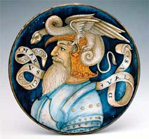

| Giovanni
Maria Vasaro
Italian maiolica Master of the 16th Century
maiolica
plate, 34 cm (13 1/2") diameter, painted between 1510-1520.
The torso of a nobleman is seen in profile on a dark blue background.
His head is adorned with a griffin or dragon, typical of the Raphaelesque
or Grotesque style of maiolica painting. The man's name, Marcus
Valdus, is diplayed prominently on a scroll. Truly a masterpiece
of Italian
Rennaisence ceramics, this work has been attributed to the
workshop of Giovanni Maria Vasaro (1475–1550).
The Italian master
potter and decorator was probably born in Faenza, but had a workshop
in Castel Durante from the early 1500s. His ‘Bowl
with the Arms of Pope Julius II’ of 1508 is described
by the Metropolitan Museum of New York as being “widely regarded
as one of the most beautiful pieces of maiolica ever made”.
It is the only known signed work by Vasaro, although others, such
as the work above, are attributed to him due to the style.
Maiolica, or maiolica,
is a technique whereby a decoration of ceramic pigments is painted
onto a low-firing white glaze, usually a tin-glaze over an earthenware
or terracotta clay. The technique can be traced back to Mesopotamia
of the 9th century AD. Eventually it made its way via North Africa
and Spain to Italy, where it was embraced and refined. Around the
15th century, many Hispano-Moresque wares made at Valencia, Spain,
were shipped to Italy via the island of Majorca, at the time also
known as Majorica or Maiolica - hence the name. In France and Germany
the term faience is used.
Related Article: Picolpasso and
the Art of Maiolica in 16th century Italy
More Articles
More Artists of the Week
|